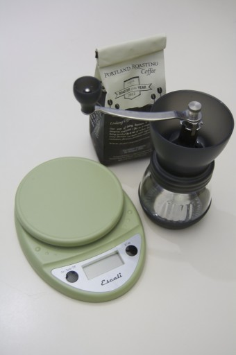
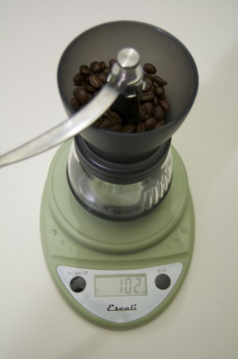
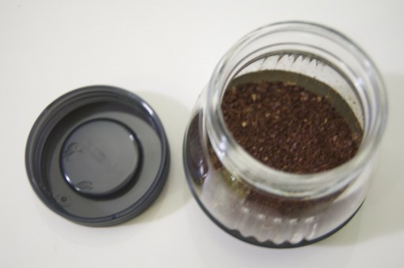
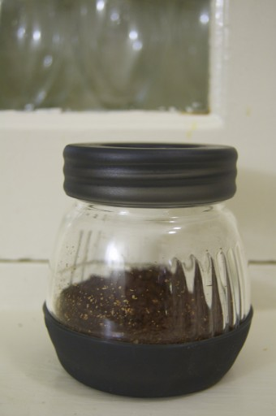

Welcome to AboutHalf
{kind=link}
I’ve used an electric blade-type coffee grinder for as long as I’ve made my own coffee. They aren’t nearly as bad as all the coffee nerds suggest, they’re just not very versatile. The biggest complaint about blade grinders is that they produce an uneven grind. This is true if you attempt to make a course grind for a coffee (french) press. Blade grinders are really only good at making a medium drip grind.
When you grind coffee in a blade grinder, the coffee beans whirl around in a little (heavenly) tornado. If you grind long enough the beans will generally get broken down to a reasonably consistent small grind for traditional filter coffee makers. However if you try a course grind you’ll find a mish-mash of tiny coffee powder and particles, variety sized bits, and sometimes whole beans left unscathed by the process (Auntie Em! There’s no place like home). You can mitigate this somewhat by pulsing the grinder and shaking in between pulses. This helps to redistribute the coffee so that it grinds a little more easily. No matter what though, you’ll find your press coffee still has silt in the bottom. Worse it may be too course and render your coffee weak and timid.
I’ve been using an AeroPress around the house for a while now. Since my poor wife can only drink decaf, I keep a supply of espresso ground decaf around so I can make her a decaf latte or Americano in the morning. My blade grinder is totally inadequate for making espresso (I tried. lots) so I was keeping whole bean coffee around for the press and espresso around for the AeroPress. Even I don’t drink that much coffee; my coffee was getting stale.
I decided to try a burr grinder. Everything I’ve read tells me that it’s the best way to grind coffee, and will handle very fine grinds all the way up to a very course grind. The electric models I looked at cost well over $100; that seemed like a lot of money for a single-use gadget. Plus, it was yet another electric thing to clutter up my cabinets.

The handsome Hario grinder caught my eye. It looked good. The price seemed much more reasonable. It’s from Japan. Ceramic, that’s good right? But how did you adjust it? Is it flimsy? Can you clean it?
Simple, but not quick, adjustment.
The Hario grinder is built with the assumption that most people only make coffee one or two ways. That is that most people grind coffee for their one primary coffee maker and maybe once in a while make an espresso. This grinder isn’t built for someone who uses a press one day, a Moka pot the next, an AeroPress the next, and a filter / drip coffee maker the next. The ideal use-case is to set the grind and forget it.
To adjust the grind, first the nut above over the grinding handle is moved. The handle is removed. A small metal collar / clip is removed. And finally a toothed wheel is adjusted (righty-tighty) to change the grind. The easiest thing to do is to tighten the grinder all the way, so that the grinder can no longer turn, loosen it to the desired opening, then reassemble the grinder.

There are no guide markings on the assembly, so I simply eyeballed what I thought was a good course grind, which worked fine. Some people mark the toothed wheel and crank-shaft with a marker, using this as a means to guesstimate the grind settings. I don’t like the idea of marker residue in my coffee.
If this sounds terribly fidgety – it is. But, if you only make one kind of coffee, you only have to set this once. It might be a deal-breaker, if it didn’t grind coffee so very beautifully.
Weigh and go
Once the grinder is adjusted, it’s incredibly easy to use and maintain. I set the grinder on top of my digital scale and press the tare button. Coffee goes right into the top to be weighed out. I use 1 oz of coffee for a standard 4-cup coffee press and 8 grams of coffee per AeroPress shot.

With the coffee weighed, you crank the handle to the right (hold onto the base), and in 20 ? 30 seconds you have perfectly ground coffee.
The grind is very very consistent. For the first time ever I’ve had press coffee with no silt in the bottom. Amazing. As long as you’re awake enough to operate the grinder, you will never accidentally make coffee to strong or too weak by over or under grinding.

Store and stay
The grinding mechanism unscrews from the storage carafe base. The mill comes with a screw-top lid for the carafe so one could grind a bunch of coffee in advance and store it in the fridge for the rest of the week.

Since the entire assembly just unscrews one could thoroughly clean every part if needed. Under regular use though, you really only have to run the grinder and carafe under running water to rinse out any remaining coffee bits and leave it to dry. Every part is ceramic, glass, plastic, or stainless steel. Nothing to rust.
Spoiled rotten
My original intention was to use the Hario to supplement my blade grinder, using it to grind espresso for the AeroPress. I would use my old blade grinder for the french press. But now that I know it makes such good coffee, I may have to clean up the old blade grinder and save it for grinding spices.
I have an affection for simple kitchen appliances that are purely mechanical and don’t require electricity. I like my manual juicer, my food mill, my manual can-opener (from the 60s), and I prefer knives over food processors and silly garlic presses. I work in technology all day. It’s refreshing to work with my hands in the kitchen. The Hario satisfies my analog desires perfectly. It’s sturdy, well made, handsome, and completely manual. It makes a cool sound when grinding too.
The Hario coffee grinder is available at most kitchen stores and on Amazon
Lined up like apostles
{kind=link}